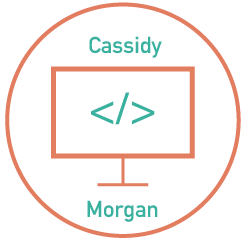

Cassidy Morgan

Cassidy Morgan is a Northern Kentucky University student majoring in Media Informatics, with minors in Computer Science and Electronic Media & Broadcasting. She has worked on several websites for NKU through their Center for Applied Informatics program. Cassidy also has experience managing the Community Mental Health Centers of Kentucky social media.